Contents
Hw8 - part II
Teacher : Dr.Emadi TA : Mr.Chalaki Author: [SeyedAli] - [SeyedHosseini] E-mail: [alishosseini79@aut.ac.ir]
%Student-Number : [9723042] % University: Amirkabir University of Technology
clear recent data
clc;
close all;
clear ;
Initialization
clc; N = 1e3; %Numbers of bits M =[4 8 16 32 64]; %M or # of symbols E_b = 0 : 0.1 : 13; % in dB N_0 = 2; %sigma^2 / 2 = 1 => N0 = 2 = sigma^2 SPS = [ 1, 10]; %Symbol per Sample
Random bit Generation and scatter plotting
clc;
for counter = 1 : length(M)
data = [0 : M(counter) - 1]; %data generation symgray = pskmod(data, M(counter),0, 'gray'); %Modulation by Order Gray mapgray = pskdemod(symgray, M(counter),0,'gray'); %DeModulation by Order Gray numbers = symgray(randi(numel(symgray), [1, N]));%Generation of Numbers in Order of #symbols * N t = numbers / std(numbers);% Transmitted bits : To Normalize: (x - u) / sigma E_s = log2(M(counter)) * 10 .^ (E_b / 10); % Energy of each symbols t = sqrt(E_s)' * t; % To have Energy E_s all symbols scaled with sqrt(E_s) t_rect = rectpulse(t,SPS(1)); %Repeat symbols % Scattering figure(counter); subplot(2, 1, 1); scatter(real(symgray), imag(symgray), '* black'); hold on; %scatter qammod symbols scatter(real(t_rect(75, :)), imag(t_rect(75, :)), '* red');%scatter transmitted symbols grid on; for k = 1 : M(counter) % Show the gray code and symbols sequence # text(real(symgray(k)) - 0.15, imag(symgray(k)) - 0.6, ... dec2base(mapgray(k), 2, 4)); text(real(symgray(k)) - 0.1, imag(symgray(k)) - 1.2, ... num2str(mapgray(k))); end axis([-6 6 -6 6]) legend('Theory', 'Transmitted') title(['Constellation M = ', num2str(M(counter))]); xlabel('In-Phase'); ylabel('Quarature');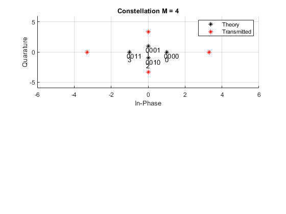 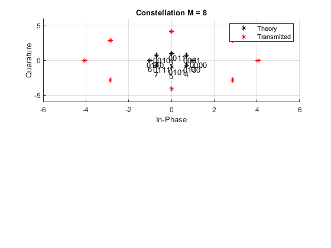 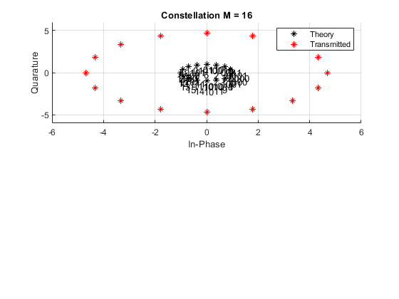 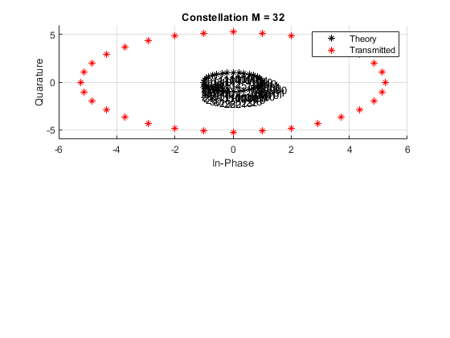

Channel and Noise Generation
n_i = randn(1, length(t)); %In-Phase noise n_q = randn(1, length(t)); %Quadrature noise n = sqrt(N_0 / 2) * (n_i / std(n_i) + ... 1i * n_q / std(n_q)); %Noise generating with variance 1 r = t_rect + n; % Recieved Signal subplot(2, 1, 2); scatter(real(r(25, :)), imag(r(25, :)), '.k'); % Scatter Recieved signal grid on; title(['Scatter plot M = ', num2str(M(counter))]); xlabel('In-Phase'); ylabel('Quadrature');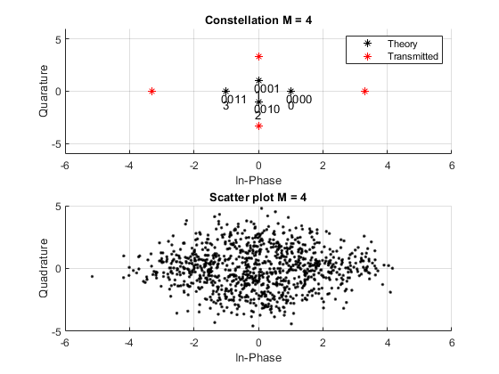 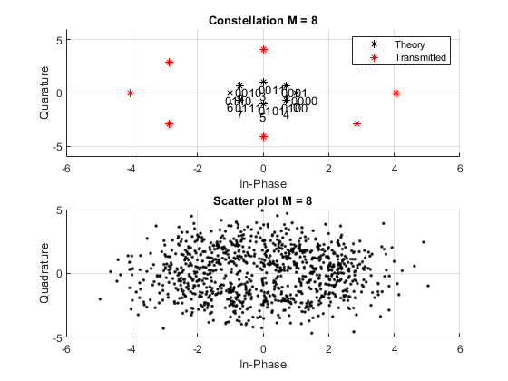 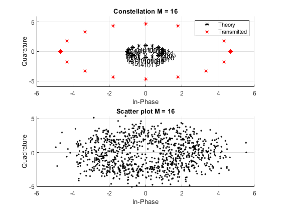 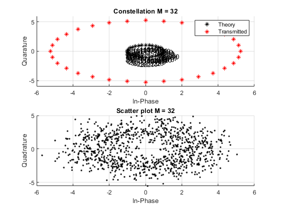 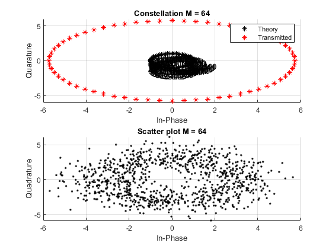
Pwelch
clc;
[pxx,f] = pwelch(numbers,[],[],[],1000,'centered','power');
figure(6)
subplot(5,1,counter)
plot(f,pow2db(pxx))
title(["M = ",num2str(M(counter)),"- PSK Power Specteral"])
grid on;
xlabel('Frequency (Hz)')
ylabel('Power (dB)')
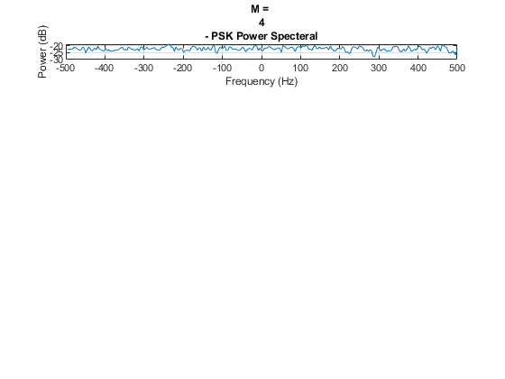 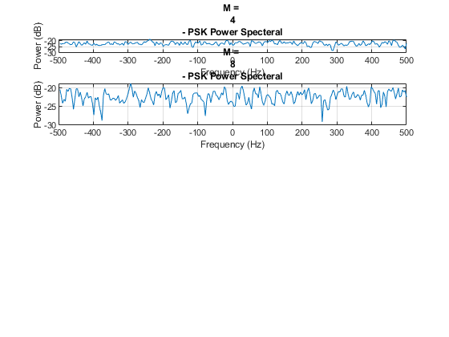 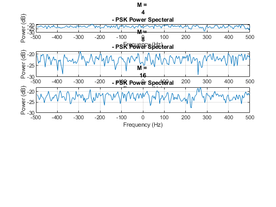 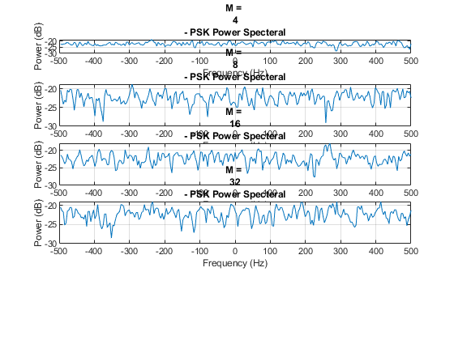 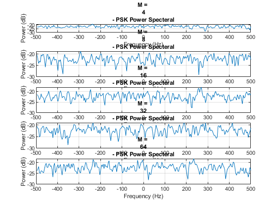 Decision Making
clc;
decision = zeros(size(r)); %Preallocating
pe = zeros(length(E_b), 1); %Preallocating
R_r = real(r) ; %real part recieved signal
R_i = imag(r) ; %imag part of Recieved signal
Dec_angle = myatan(R_i,R_r) ; %Calculating angle in range 0 to 2*pi
Op_dec = 2*pi ./ M ; %Decision Angle
symgrayR_sort = sort(real(symgray));
symgrayI_sort = sort(imag(symgray));
for i = 1 : size(E_s,2)
for j = 1 : numel(N)
for l = 2 : M
if Dec_angle(i,j) <= Op_dec(l) && Dec_angle(i,j) > Op_dec(l - 1)
decision(i,j) = symgrayR_sort(1,j)...
+ 1i* symgrayI_sort(1,j);
end
end
end
end
SPS Demodulation
h = ones(1, SPS(2)) / SPS(2);
y = zeros(size(E, 1), size(r, 2) + M - 1);
for counter = 1 : size(E, 1)
y(counter, :) = conv(r(counter, :), h); % Conv for normalized sum calculation
end
temp_normalized = zeros(size(E_s, 1), N); %preallocation
for row = 1 : size(E_s, 1)
for column = 1 : num_bit
temp_normalized(row, column) = y(row, column * SPS(2)); % Optimum point selection
end
endPLOT
clc;
pe = pe' / N; % Normalize the error
% Plotting BER figure
figure(7)
semilogy(E_b, pe, '-- red'); hold on;
Pe_theory = 2 * qfunc((pi./M(counter)) .*(sqrt((2*E_s)./N_0))); %sin pi/M =~ pi/M
semilogy(E_b, Pe_theory, '-. black'); hold on;
xlabel('Eb/No (dB)');
ylabel('Pe');
title('BER');
grid on;
legend('M-PSK', 'Theory', 'Location', 'SouthWest')
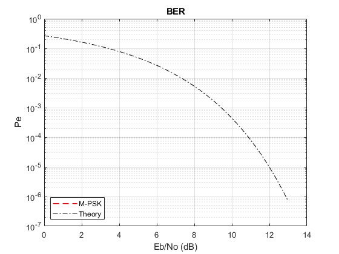 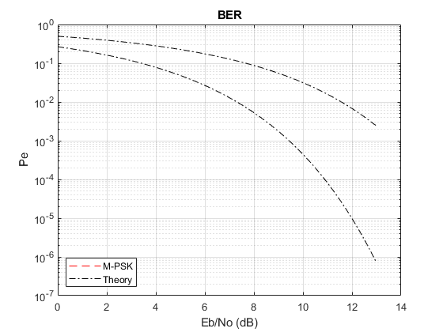 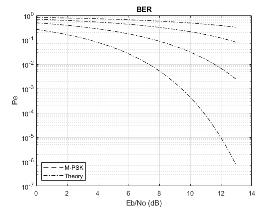 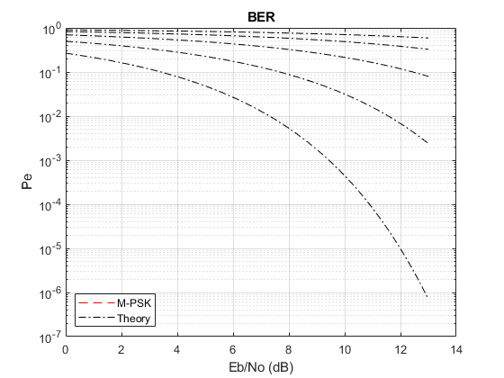 end